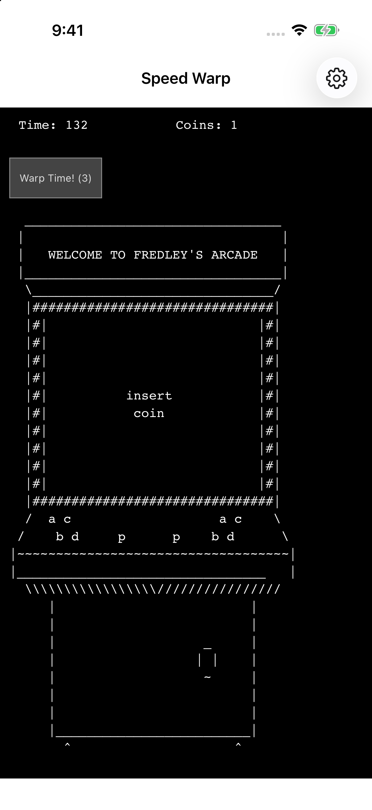
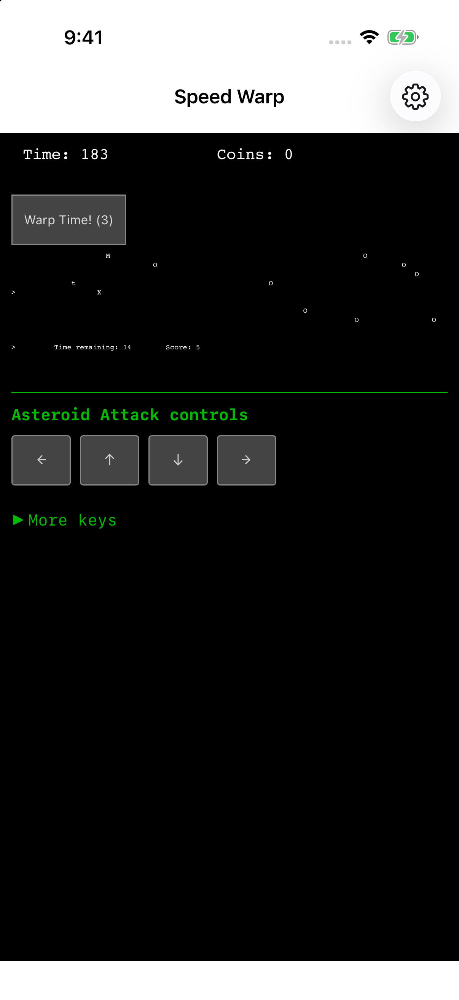

005 · iPhone & iPad · In preparation
Speed Warp
Warp time. Unlock what comes next.
Collect time, discover coins, and unlock an expanding collection of minigames and systems in Tom Medley’s original Warp, adapted for iPhone and iPad.
Explore the gamePublic release in preparation.
Speed Warp
Let time
open new doors.
Begin with time. Unlock new activities, discover recipes, improve equipment, and explore the connections between the game’s minigames and unfolding systems.
The original Warp runtime runs locally with its original rules and progression. Touch controls forward the original keyboard actions, making the minigames playable on iPhone and iPad. ASCII panels can scroll horizontally; landscape gives you more room.
Swipe to explore screenshots →


Enter the original ASCII arcade and discover what follows.


Play Asteroid Attack with the added touch direction keys.
Real screenshots from the iPhone app. Also designed for iPad.
Made for a little focus.
Your game.
Your device.
Play offline, keep progress locally, and export a backup when you want a separate copy.
Can I play offline?
Yes. The original game and its required resources are bundled with the app. Links you choose open in your browser and require internet access.
How are saves handled?
The original game saves once per second. Its save format does not preserve an in-progress minigame’s live position. Export a backup between activities when possible; the host adds no catch-up production while closed.
Open Settings → Export backup to create a native JSON backup. Use Import backup to restore one. Import asks before replacing progress. Keep exported backups separately from the app.
Does it run while I’m away?
iOS may suspend the game in the background. The app does not add closed-app catch-up production.
When can I download it?
The iOS app is in preparation. A verified App Store link will appear here when it is publicly available. There is no public beta sign-up on this page.
Player information
A little help,
when you need it.
Find save instructions, contact support, and read the app’s privacy policy.
Warp © 2013 Tom Medley (fredley), released under the MIT License. Original game, jQuery, and jQuery UI notices are retained in the app. Read the Warp MIT license, jQuery notice, and jQuery UI notice. Visit the original game or source.
An independent iOS adaptation of the MIT-licensed browser game Warp. In preparation for iPhone and iPad.